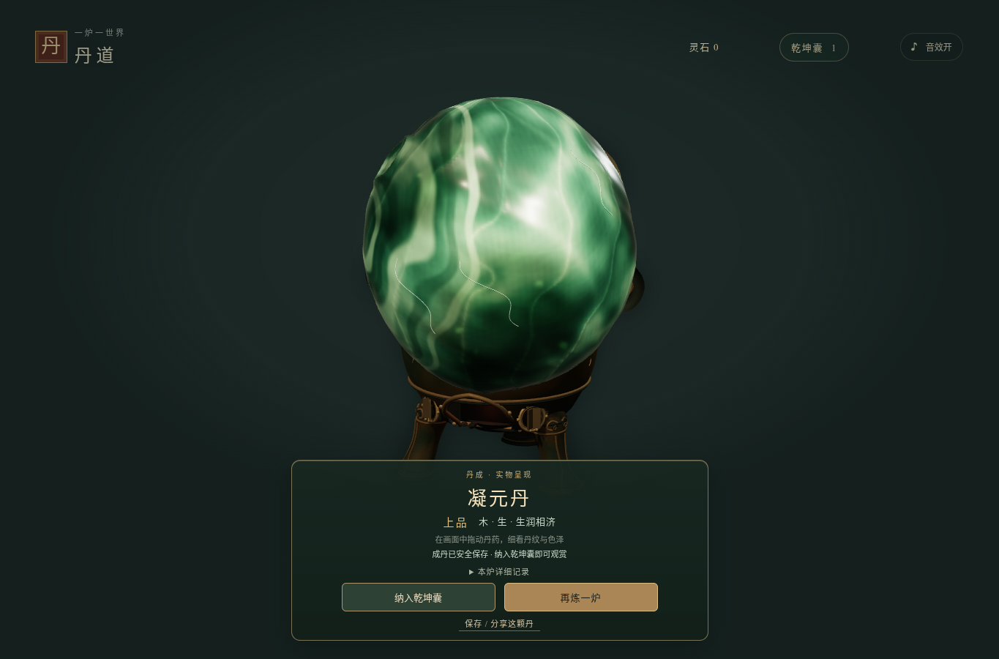
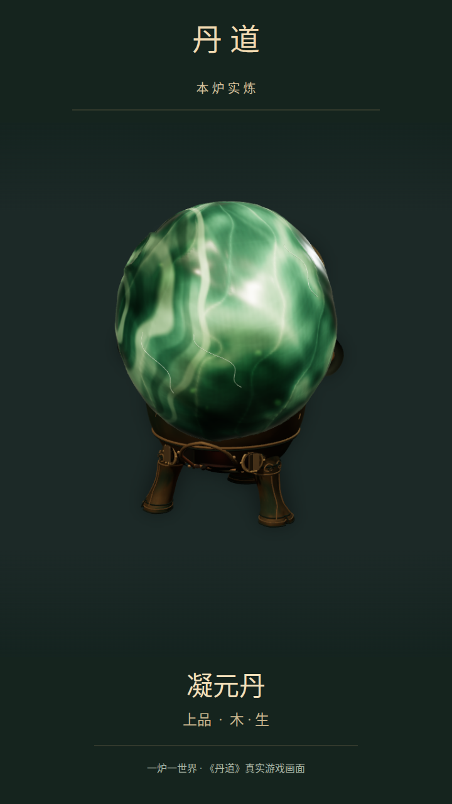
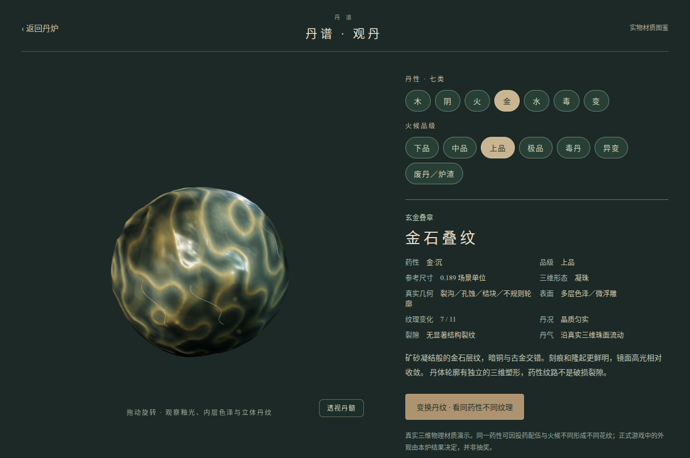
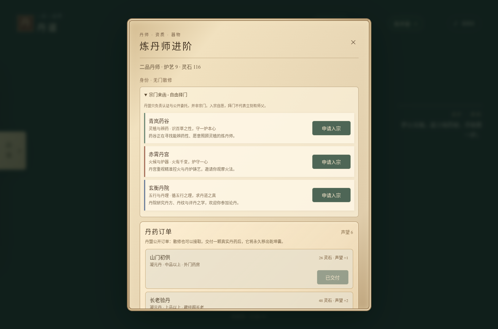
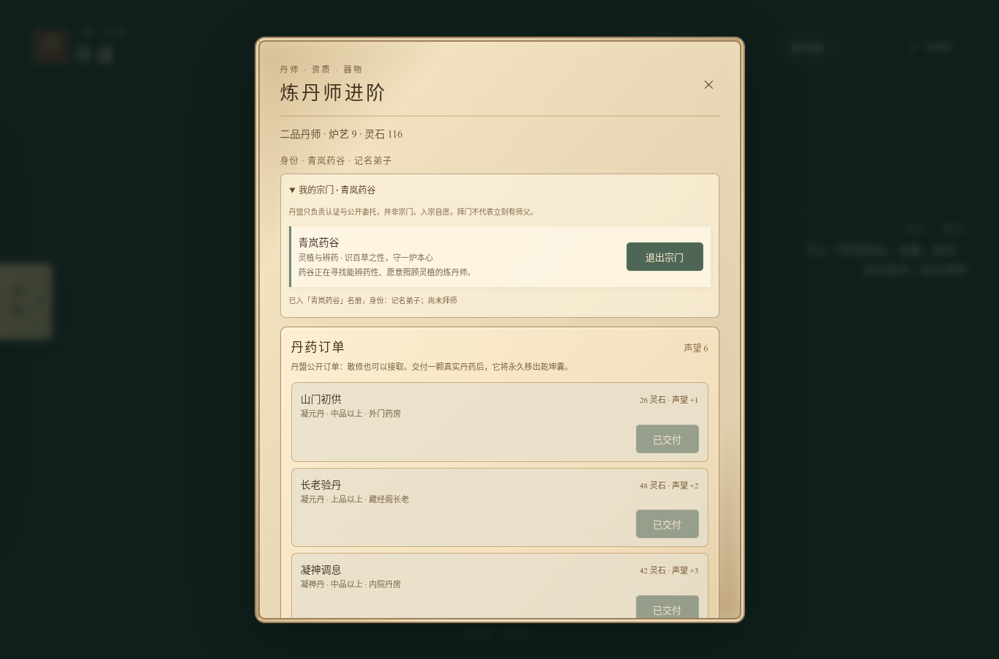

丹道 · V1 / Web3D 已整合 / 免费公测
从第一颗丹，到三宗来函
真实 Three.js WebGL2 游戏的完整整合候选：炼丹、二品丹师、玄火炉、乾坤囊、丹盟公开委托、声望与可选宗门身份。开局仍只显示最简单的炼丹操作，玩法随品级逐渐展开。
01 · 真正炼出第一颗丹


02 · 丹药真实三层与药性差异


03 · 宗门不是一进游戏就强制选择


04 · 真实开炉录像
本轮整合版真正投药、开炉和录制的 10 秒游戏视频，带 Web Audio 炉火音效。
下载兼容 MP4 · 下载原生 WebM · 下载真实丹药 PNG

原生视频共约 146 帧/10秒；MP4 仅为 H264/AAC 转码，不冒称已达到原生 24/30 FPS。
05 · 当前合格范围
| 项目 | 验收结论 |
|---|---|
| 整合后自动测试 | 277/277 通过 |
| NVIDIA 真 GPU 首炉与分享 | 通过，独立账本未被篡改 |
| 宗门及跨标签并发 | 通过，真实业务事务 |
| 实体 Android / iPhone 连续 FPS | 尚未通过 |
| 正式付费发行与云存档 | 没有开放 |